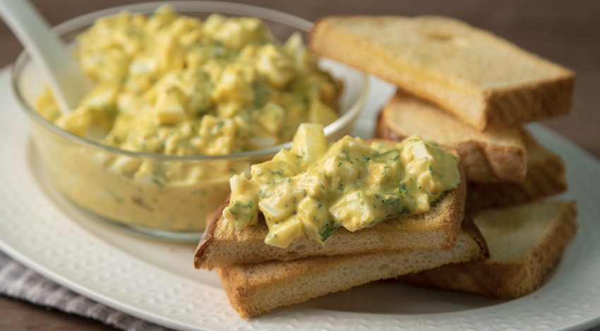

Lava y pica finamente el medio manojo de perejil. Pela y pica finamente el diente de ajo. Rompe los huevos en un tazón y bátelos con un tenedor hasta que estén bien mezclados.
Toma la rebanada de pan tostado y desmenúzala en trozos pequeños. Puedes hacer esto con las manos o usando un procesador de alimentos.
Añade el perejil picado y el ajo a los huevos batidos. Agrega también los trozos de pan tostado. Mezcla todo bien hasta que los ingredientes estén distribuidos de manera uniforme.
Añade sal al gusto y vuelve a mezclar para asegurarte de que la sal se distribuya de manera uniforme en la mezcla.
Coloca una sartén a fuego medio y agrega un poco de aceite de oliva virgen extra para engrasarla. Asegúrate de que la sartén esté bien caliente antes de pasar al siguiente paso.
Vierte la mezcla en la sartén caliente y cocina a fuego medio. Con ayuda de una espátula, ve levantando los bordes para que la tortilla no se pegue y se cocine de manera uniforme.
Cuando la parte inferior esté dorada, con cuidado, dale la vuelta a la tortilla para que la otra cara se cocine. Puedes hacer esto deslizando la tortilla a un plato y luego volviéndola a colocar en la sartén con la parte cruda hacia abajo.
Cocina la otra cara hasta que esté dorada y la tortilla esté completamente cocida por dentro.
Una vez que la tortilla de perejil esté lista, sácala de la sartén y colócala en un plato. Puedes cortarla en porciones y servirla caliente.
